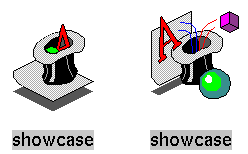

This chapter offers an overview of the basic steps for creating IRIX Interactive Desktop icons and adding them to the Icon Catalog. If you don't feel you need much background information, you can skip to the brief list of instructions provided in “Checklist for Creating an Icon”.
This chapter contains these sections:
“About IRIX Interactive Desktop Icons” briefly discusses the IRIX Interactive Desktop and lists what kinds of icons you'll need to provide for your application.
“Checklist for Creating an Icon” lists the basic steps for drawing, programming, compiling, and installing an icon.
“Creating an Icon: The Basic Steps Explained in Detail” explains each of the basic icon creation steps in more detail.

Note: Minimized windows, which represent running applications, aren't Desktop icons. To learn how to customize the image on a minimized window, refer to Chapter 6, “Customizing Your Application's Minimized Windows”.
Files on the Desktop are represented by icons. Users can manipulate these icons to run applications, print documents, and perform other actions. “How Users Interact With Desktop Icons” in Chapter 1 of the IRIX Interactive User Interface Guidelines describes some of the common user interactions.
The Desktop displays different icons to represent the different types of files. For example, the default icon for binary executables is the “magic carpet,” and the default icon for plain text files is a stack of pages.
When you create your own application, by default the Desktop uses an appropriate “generic” icon to represent the application and its associated data files (for example, the magic carpet icon for the executable and the stack of pages icon for text files). You can also design your own custom icons to promote product identity and to indicate associated files. For example, the custom ShowCase icons over a generic.exec.closed.fti and a generic.exec.open.fti look like this:
|  |
Another advantage of creating custom icons is that you can program them to perform certain actions when users interact with them on the Desktop. For example, you can program a custom data file icon so that when a user opens it, the Desktop launches your application and opens the data file.
The Desktop determines which icon to display for a particular file by finding a matching file type. A file type consists of a set of File Typing Rules (FTRs) that describe which files belong to the file type and how that type's icon looks and acts on the Desktop.
The Desktop reads FTRs from compiled versions of special text files called FTR files. An FTR file is a file in which one or more file types are defined (typically, you define more than one file type in a single file). FTR files can also contain print conversion rules, which define any special filters needed to print given file types. Chapter 13, “File Typing Rules”, discusses the syntax of FTRs, and Chapter 14, “Printing From the Desktop”, discusses print conversion rules.
To provide a comprehensive Desktop icon interface for your application:
Tag your application. You need to tag the application with its own unique identification number so that the Desktop has a way of matching the application with the corresponding FTRs. See “Step One: Tagging Your Application” for instructions.
Draw a picture of your icon. Create a distinctive Desktop icon to help users distinguish your application from other applications on the Desktop. Optionally, create an icon for the data files associated with your application. Use the IconSmith application to draw your icons. IconSmith allows you to draw an icon and then convert it into the icon description language used by the Desktop. IconSmith is the only tool you can use to create an icon picture. For guidelines on designing icons, see the IRIX Interactive User Interface Guidelines. For information on how to use IconSmith, see Chapter 12, “Using IconSmith”.
Program your icon. Create the FTRs to define your icons' Desktop interaction. Chapter 13, “File Typing Rules”, describes FTRs in detail. Before programming your icon, think about what users expect from the application and, with that in mind, decide how you want the icon to behave within the Desktop. Before you make these decisions, read the icon programming guidelines in “Defining the Behavior of Icons With FTRs” in Chapter 2 of the IRIX Interactive User Interface Guidelines. In particular:
Program your Desktop icon to run your application with the most useful options. Include instructions for launching your application when the user opens the icon; opens the icon while holding down the <Alt> key; and drags and drops other icons on the application icon.
If there are several useful combinations of options that users may want to use when invoking your application, you can incorporate them into a Desktop menu. (These Desktop menu items appear only when the icon is selected.) Users can then select the menu item that corresponds to the behavior they want—without having to memorize a lot of option flags.
Where appropriate, provide print conversion rules that describe how to convert a data file for printing into a type recognized by the Desktop. To print output, users can then just select the appropriate data file icon and choose “Print” from the Desktop menu rather than having to remember specialized filter information. Chapter 14, “Printing From the Desktop”, describes print conversion rules.
Compile the source files. Compile the .ftr files into an .otr file. In particular, the desktop.otr file contains the compiled source for existing FTRs. For more information on .otr files, see “Step Four: Compiling the Source Files”.
Add your application to the Icon Catalog. This makes it easier for your users to locate your icon in the Icon Catalog and helps maintain a consistent look for your application in the Desktop. “Step Five: Installing Your Application in the Icon Catalog” explains how to do this.
Restart the Desktop. You can view your changes after you restart the Desktop. “Step Six: Restarting the Desktop” explains how to restart the Desktop.
Update your installation process. If you want to install your application on other Silicon Graphics workstations, include in your installation all of the files that you created in the preceding steps. Silicon Graphics recommends you use swpkg to package your files for installation. See the Software Packager User's Guide for information for instructions on using swpkg. See “Step Seven: Updating Your Installation Process” for guidelines.
Note: You cannot create your own device, host, or people icons. These are special icons used by the Desktop and can currently be created only by Silicon Graphics.
This section describes in detail each of the basic steps listed in “Checklist for Creating an Icon”. The steps are:
The first step is to tag the application or shell script with its own unique identification number so that the Desktop has a way of matching the application with the corresponding FTRs. The easiest way to tag your application is to use the tag command. In order to use tag, your application must be an executable or a shell script, and you must have write and execute permissions for the file.
| Note: You do not tag data or configuration files used by your application. Instead, you provide rules as described in “Matching Files Without the tag Command” in Chapter 13 to identify these files. |
If your application does meet the criteria for using the tag command, then select a tag number from your block of registered tag numbers. If you do not have a block of registered tag numbers, you can get one by calling 415/933-TAGS or sending an e-mail request to Silicon Graphics at this mail address:
desktoptags@sgi.com |
After Silicon Graphics sends you a block of registered tag numbers, use the tag(1) command to assign one to your application. To do this, change to the directory containing your application and enter:
% tag tagnumber filename |
where tagnumber is the number you assign to the application and filename is the name of the application.
For example:
% /usr/sbin/tag 0X0101011 myapp |
For more detailed information on the tag command, see the tag(1) reference page.
The next step is to create the picture for your icon. An icon picture generally consists of a unique badge plus a generic component (for example, the “magic carpet” designating executables). The badge is the part of the icon picture that appears in front of the generic component and that uniquely identifies your application. The generic components are pre-drawn and installed by default when you install the IRIX Interactive Desktop environment.
“Designing the Appearance of Icons” in Chapter 2 of the IRIX Interactive User Interface Guidelines provides guidelines for drawing your icon images. If possible, consult with a designer or graphics artist to produce an attractive, descriptive icon. Chapter 12, “Using IconSmith”, describes exactly how to draw such an icon. Save the badge in a file called <IconName>.fti, where IconName is any name you choose. Choose a meaningful name (such as the name of the application or data format). If you have separate pictures representing the open and closed states of the icon, it's a good idea to name them <IconName>.open.fti and <IconName>.closed.fti, respectively.
After drawing your badge with IconSmith (described in Chapter 12, “Using IconSmith”) save the picture—the filename should end in .fti—and put the saved file in the correct directory. The appropriate directory depends on where you put your FTR files:
If you put your FTR (.ftr) files in the /usr/lib/filetype/install directory (where you typically should install your FTR files), then put your badge (.fti) files in the /usr/lib/filetype/install/iconlib directory.
If you put your FTR files in one of the other directories listed in Appendix F, “FTR File Directories”, then put your badge file in a subdirectory of that directory. Name the subdirectory iconlib if the subdirectory doesn't already exist.
Programming an icon means creating a file type. Each file type consists of a set of file typing rules, each of which defines some aspect of the look or behavior of the icon. Your file type includes rules that name the file type, and tells the Desktop where to find the associated icon files, what to do when users double-click the icon, and so on. Chapter 13, “File Typing Rules”, describes how to create the FTR file that defines your file type. “Defining the Behavior of Icons With FTRs” in Chapter 2 of the IRIX Interactive User Interface Guidelines describes the types of behaviors your icons should support.
(This section assumes that you are writing your FTRs completely from scratch. You may prefer instead to modify an existing file type. To learn how to find the FTRs for an existing icon, see “Add the FTRs: An Alternate Method”.)
Most FTR files that are not created at Silicon Graphics belong in the /usr/lib/filetype/install directory. There are also specific FTR directories set aside for site administration. For a list of all FTR directories, see Appendix F, “FTR File Directories”.
If you want to have a look at some existing FTR files, check out the /usr/lib/filetype/install directory.
If you have an existing FTR file, you can add the new file type to this file. Otherwise, you need to create a new FTR file, which you should name according to the standard naming convention for application vendors' FTR files. The convention is:
vendor-name[.application-name].ftr |
where vendor-name is the name of your company and application-name is the name of your application.
Each file type must have a unique name. To help insure that your file type name is unique, base it as closely as possible on your application name.
As an extra check, you can search for your file type name in the /usr/lib/filetype directory, to make sure that the name is not already in use:
Change to the /usr/lib/filetype directory:
% cd /usr/lib/filetype
Search for the file type name:
% grep "your_name_here" */*.ftr
where your_name_here is the name you've selected for your file type.
If you find another file type of the name you have chosen, pick a new name.
To create a file type, either add the file type definition to an existing FTR file or create a new FTR file. You can define all the necessary file types for your application in a single FTR file.
Each file type definition must include the following rules:
the TYPE rule, to tell the Desktop that you are declaring and naming a new type (the TYPE rule must go on the first line of each filetype definition)—a type is a unique type of icon, such as an email icon. For example, the file myftrs.ftr contains two filetypes:
TYPE FOO MATCH ... TYPE FOO2 MATCH ...
the LEGEND rule, to provide a text description when users view icons as a list
the MATCH rule, to allow the Desktop to match files with the corresponding file type
the ICON rule, to tell the Desktop how to draw the icon to use for this file type
Note: The TYPE, LEGEND, and other rules are typically referred to as “rules,” and the entire set of rules defining a single file type is called a “filetype,” or an “FTR.”
In addition to these basic components, you can add other rules as necessary for each different filetype you define.
If you don't want to write the file type from scratch, you can modify an existing file type.
The first step is to choose a file type that produces icon behavior similar to what you want from your new file type (that is, does the same thing when you double-click the icon, acts the same way when you drop the icon on another icon, and so on.)
To find the set of FTRs that define the file type for the an icon, first locate the icon on the Desktop. If the icon isn't already on the Desktop select “File QuickFind” from the Find toolchest and use the Find an Icon window to find the icon. (When the icon appears in the drop pocket, drag it onto the Desktop.
Select the icon by clicking the left mouse button on it, then hold down the right mouse button to get the Desktop menu. When the menu appears, select the “Get Info” menu item. A window appears. In the window, look at the line labeled, “Type.”
For example, if you'd selected the jot icon, the line would read:
Type: jot text editor |
The string “jot text editor” is produced by the LEGEND rule. You can use this string to find the FTR that defines the jot file type. To do this, open a shell and follow these steps:
Change to the /usr/lib/filetype directory
% cd /usr/lib/filetype
Search for “jot text editor”
% grep "jot text editor" */*.ftr
The system responds with this line:
system/sgiutil.ftr: LEGEND :308:jot text editor |
This line tells you that the jot FTR is in the /usr/lib/filetype/system directory in a file named sgiutil.ftr. The :308: is to allow the jot LEGEND to be localized (translated into languages other than English). The 308 refers to line number 308 in the uxsgidesktop message catalog. See the gettxt(1) reference page for a description of how to use such message files. If you only intend to ship your application in English speaking countries, you can omit the line number designation (for example, :308:) from your filetype.
Now you can open the sgiutil.ftr file using the text editor of your choice, and search for the “jot text editor” string again. This shows exactly where the jot FTR is in the sgiutil.ftr file.
| Note: If the jot file type did not have its own icon, this search would not give you the filename. |
Now you can go to the file with the jot FTR and copy it into the FTR file for your new file type. Then rename and modify the copied FTR to fit your new file type, as described in “Step Three: Programming Your Icon”.
Here is an example of a simple file type:
TYPE ScrimShaw
MATCH tag == 0x00001005;
LEGEND the scrimshaw drawing program
SUPERTYPE Executable
CMD OPEN $LEADER
CMD ALTOPEN launch -c $LEADER
ICON {
if (opened) {
include("../iconlib/generic.exec.open.fti");
} else {
include("../iconlib/generic.exec.closed.fti");
}
include("/iconlib/scrimshaw.fti");
}
|
Here's a brief description of what each of these lines does:
The first line contains the TYPE rule, which you use to name the file type. In this case, the file type is named, ScrimShaw. Always place the TYPE rule on the first line of your FTR. The TYPE rule is described in “Naming File Types: The TYPE Rule” in Chapter 13.
The second line contains the MATCH rule. Use the MATCH rule to tell the Desktop which files belong to this file type. In this example, we are just writing in the identification (tag) number that we have already assigned to the executable. The MATCH rule is described in “Matching File Types With Applications: The MATCH Rule” in Chapter 13.
The third line contains the LEGEND rule. Use this rule to provide a brief descriptive phrase for the file type. This phrase appears when users view a directory in list form. It also appears when users select the “Get File Info” item from the Desktop pop-up menu. In this case, the descriptive phrase is “the scrimshaw drawing program.” The LEGEND rule is described in “Adding a Descriptive Phrase: The LEGEND Rule” in Chapter 13.
The fourth line contains the SUPERTYPE rule. Use this rule to name a file type superset for your FTR. In this example, the SUPERSET is “Executable.” The SUPERTYPE rule is described in “Categorizing File Types: The SUPERTYPE Rule” in Chapter 13.
The fifth line contains the CMD OPEN rule. This rule tells the Desktop what to do when users double-click the icon. In this example, double-clicking the icon opens the scrimshaw application. The $LEADER variable is a Desktop variable, usually set to the full name of the first selected icon. The Desktop variables are listed and defined in Appendix B, “Desktop Variables”. The CMD OPEN rule is described in “Programming Open Behavior: The CMD OPEN Rule” in Chapter 13.
The sixth line contains the CMD ALTOPEN rule. This rule tells the Desktop what to do when users double-click the icon while holding down the <Alt> key. In this example, the Desktop runs launch(1), which brings up a small dialog window containing a single text field, so that users can type in command-line arguments to the scrimshaw executable. Again, $LEADER is a Desktop variable (variables are listed in Appendix B). For more information on the launch command, see the launch(1) reference page. The CMD ALTOPEN rule is described in “Programming Alt-Open Behavior: The CMD ALTOPEN Rule” in Chapter 13.
The final lines contain the ICON rule. These lines tell the Desktop where to find the generic components (open and closed) as well as the unique application-specific badge. The generic components together with the badge comprise the scrimshaw icon appearance. Note that this rule combines the generic component for open and closed executables with the unique “scrimshaw” badge that identifies it as a distinctive application. The ICON rule is described in “Getting the Icon Picture: The ICON Rule” in Chapter 13.
The Desktop compiles FTR source files into files called .otr files. These files are in the /usr/lib/filetype directory.
| Note: Users can create personal desktop.otr files. See /usr/lib/filetype/Makefile.personal and Desktop User's Guide for information about how to create and use personal desktop icons. |
| Note: The .ctr files are obsolete as of IRIX release 6.3. |
Any time you add or change FTRs (or print conversion rules) you must recompile the .otr files by following these steps:
Change to the /usr/lib/filetype directory:
% cd /usr/lib/filetype
Become superuser:
% su
Recompile the files:
# make -u
(If you don't use the -u option when you make the files, some of your changes may not take effect.)
To activate the new FTRs, quit and restart the Desktop. For instructions on restarting the Desktop, see “Step Six: Restarting the Desktop”.
It's easy to add your icon to the icon catalog. Just install a symbolic link to your application in the /usr/lib/desktop/iconcatalog/C/Applications directory.
| Note: The iconbookedit command is obsolete as of IRIX release 6.3. |
Then, add the install rule in your Makefile. For example, enter:
/etc/install -idb myIdbTag -F \ /usr/lib/desktop/iconcatalog/pages/C/Applications -lns /usr/sbin/myapp MyApp |
where C is the $LANG environment variable, Applications is the page on which the icon will appear in the icon catalog, and MyApp is the name to appear under your icon in the icon catalog (the name can be different from the name of the executable).
Another example:
/etc/install -idb myIdbTag -F /usr/lib/desktop/iconcatalog/pages/C/WebTools \ -lns /usr/sbin/mywebapp MyWebApp |
In this example, the application, mywebapp, will appear on the WebTools icon catalog page, with the name MyWebApp under the icon.
For additional information, see “Making Application Icons Accessible” in Chapter 2 of the IRIX Interactive User Interface Guidelines, which describes the Icon Catalog and how to select the appropriate page of the Icon Catalog for your application.
To view your changes and additions, you must restart the Desktop. To restart the Desktop, first kill it by typing:
% /usr/lib/desktop/telldesktop quit |
Then, restart the Desktop by selecting “In my Home Directory” from the Access Files menu on the Desktop toolchest.
Silicon Graphics recommends you use swpkg to package your files for installation.The Software Packager User's Guide describes how to package your application for installation.
Your installation process must:
Tag the executables it produces (“Step One: Tagging Your Application” explains how to tag executables). Put the tag in the Makefile before the command that installs your application in the appropriate directory. For example:
TAG = 0x000010741 $(TARGET): $(OBJECTS) $(C++) $(C++FLAGS) $(OBJECTS) $(LDFLAGS) -o $@ $(TOOLROOT)/usr/sbin/tag $(TAG) $(TARGET)Copy .fti and .ftr files to the appropriate directories (“Where to Put FTR Files” and “Where to Install Your Completed Icon” in Chapter 12 explain which directories these files belong in). With swpkg, you can do this by setting the appropriate destination directory and destination filename for each file, using the Edit Permissions and Destinations worksheet. See Chapter 5, “Editing Permissions and Destinations,” in the Software Packager User's Guide for instructions.
Invoke make in /usr/lib/filetype to update the Desktop's database (“Step Four: Compiling the Source Files” explains how to update the database). With swpkg, you can do this using the exitop attribute from the Add Attributes worksheet. Set up the exitop attribute to run the make command. See Chapter 6, “Adding Attributes,” in the Software Packager User's Guide for instructions.
Add your icon to the Icon Catalog, creating a symbolic link in the /usr/lib/desktop/iconcatalog/C/Applications directory. See “Step Five: Installing Your Application in the Icon Catalog” for instructions.
See the make(1), sh(1), and tag(1) reference pages for more information on these commands.